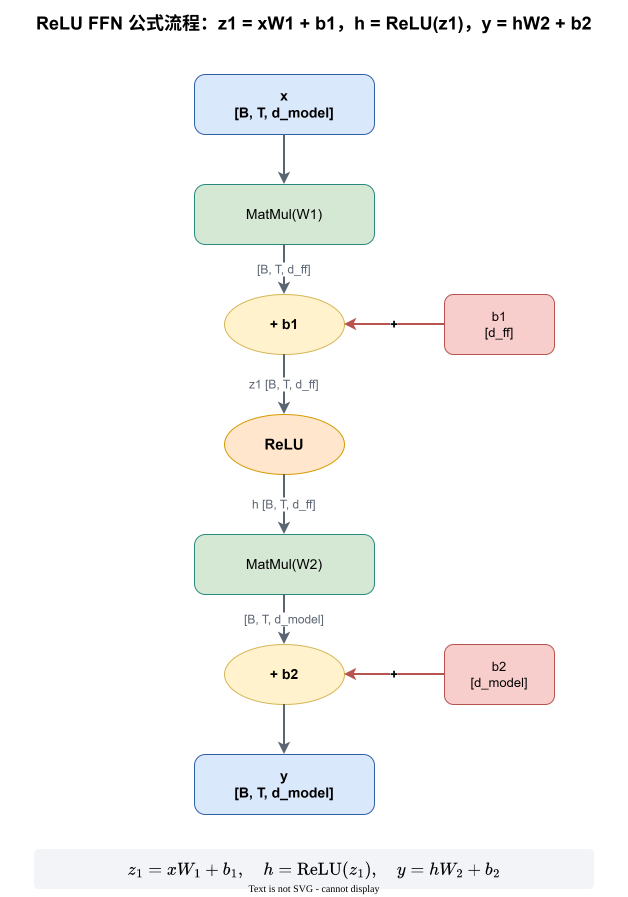
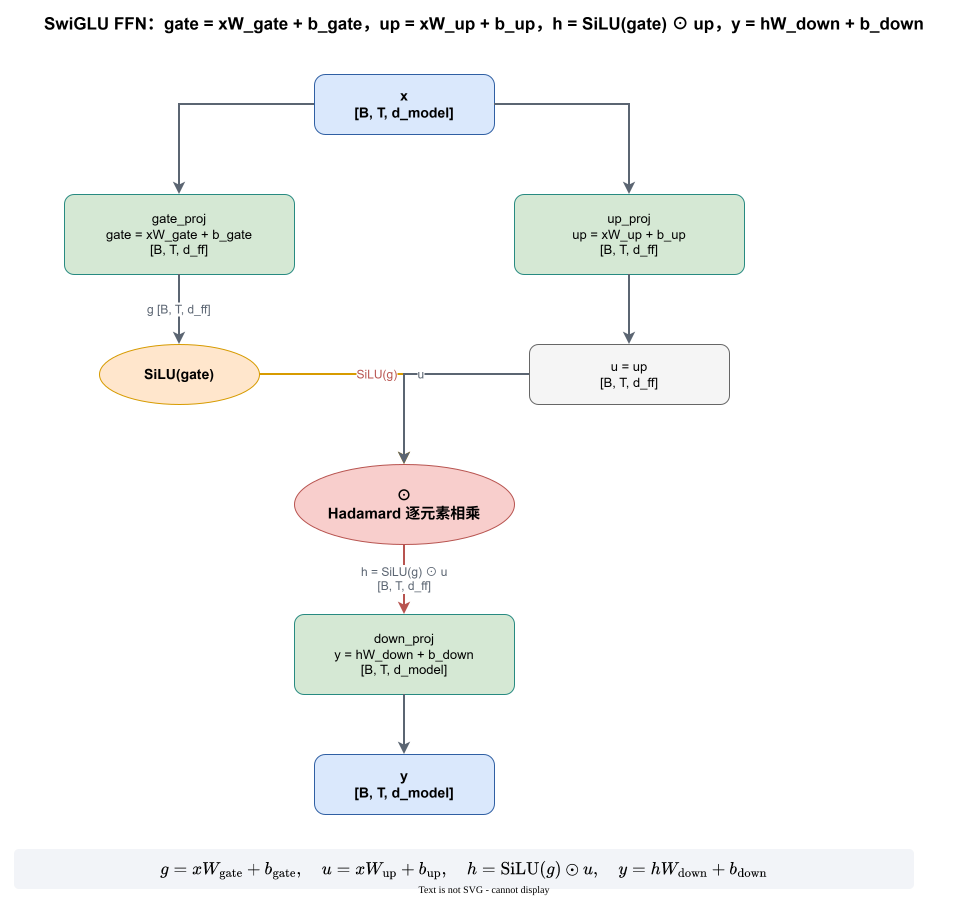
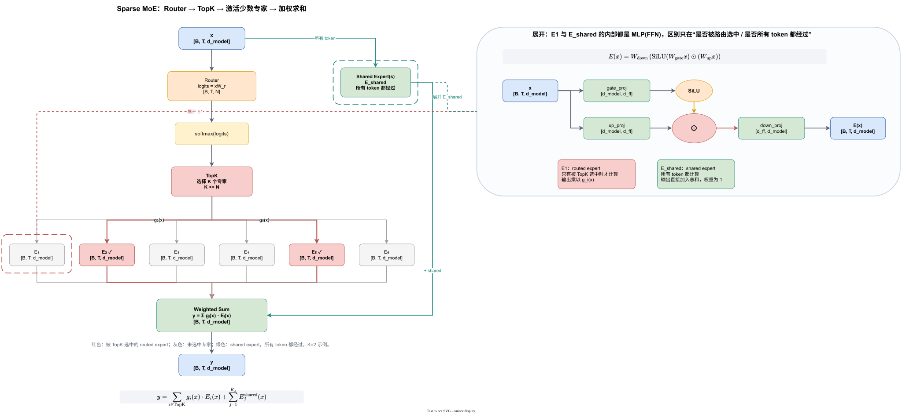

本文先从前面的 FFN / SwiGLU / MoE 三张图出发，展开前馈网络与稀疏专家模型的计算原理；再梳理 vLLM 与 vLLM-Ascend 中用于优化前馈层的常见融合算子和接口。文中所有数学符号均使用 LaTeX；渲染到网页时建议启用 MathJax 或 KaTeX。
gate_proj 和 up_proj，再做逐元素乘法，最后经 down_proj 降回 d_model。npu_ffn、npu_grouped_matmul、npu_swiglu、npu_moe_gating_top_k_softmax、npu_moe_init_routing、npu_grouped_matmul_swiglu_quant_v2 等 NPU 融合算子。相关图文件：
Transformer 的每个 token 经过 Attention 后进入 FFN。隐藏维度记为 $d_{\mathrm{model}}$，FFN 中间维度记为 $d_{\mathrm{ff}}$，通常 $d_{\mathrm{ff}} \approx 4 d_{\mathrm{model}}$。
输入张量：
[B, T, d_model]
普通 ReLU FFN：
对应矩阵形状：
W1 : [d_model, d_ff]
b1 : [d_ff]
W2 : [d_ff, d_model]
b2 : [d_model]
shape 流转：
[B, T, d_model]
↓ W1
[B, T, d_ff]
↓ ReLU
[B, T, d_ff]
↓ W2
[B, T, d_model]
这正好对应图 mlp_shape_flow.svg。

SwiGLU 是 LLM 中更常用的 FFN。它把普通 FFN 的 $W_1$ 拆成两个升维分支：
其中：
三个投影的语义：
| 名称 | 含义 | Shape |
|---|---|---|
gate_proj |
门控分支，决定哪些维度保留 | [B, T, d_model] -> [B, T, d_ff] |
up_proj |
内容分支，承载候选信息 | [B, T, d_model] -> [B, T, d_ff] |
down_proj |
降维投影，把结果压回隐藏维 | [B, T, d_ff] -> [B, T, d_model] |
因此 SwiGLU 可以理解为：
这也是 ffn_formula_flow.drawio 中 SwiGLU sheet 的展开内容。

稀疏 MoE 层把前馈层替换为 $N$ 个专家和一个 Router。每个专家通常就是一个小型 FFN/MLP，例如 SwiGLU MLP。
输入 $x$ 先经 Router 得到 logits：
再经 softmax 和 Top-K 选择少数专家：
上面的书写顺序表示“先 softmax，再取 top-k”。少数模型（例如 Mixtral）使用 sigmoid 后再取 top-k，具体以模型定义为准；但“只保留少量专家并归一化权重”这一目标不变。
每个 token 只激活 $K \ll N$ 个 routed experts。完整输出应同时包含 shared experts：
其中：
“shared expert 权重恒为 1”是本图为了讲清概念所做的简化。DeepSeek-V3 等实际模型还会对 shared expert 加一个可学习的线性门控，此时输出项写成 $\sum_j g^{\mathrm{shared}}_j(x)\,E_j^{\mathrm{shared}}(x)$。无论哪种写法，shared expert 都不参与 sparse TopK 选择，这是它与 routed expert 的本质区别。
专家内部计算与 SwiGLU FFN 相同：
该结构对应 moe_vs_ffn_diagram.svg 和 ffn_formula_flow.drawio 的 MoE sheet。

在推理系统中，MoE 每层通常包括：
Router / TopK
→ token dispatch
→ expert grouped GEMM
→ activation
→ down projection
→ token combine
因此优化前馈层不只是优化单个 FFN，还包括路由、调度、通信、分组矩阵乘和激活融合。
vLLM 的 MoE 执行入口已经模块化，核心由 FusedMoEFactory 创建。它把 Router、RoutedExperts、MoERunner 组合成完整执行管线：
Router -> prepare/dispatch -> experts grouped GEMM -> finalize/combine
主要接口：
FusedMoEFactoryfused_expertsFusedMoEModularKernelFusedMoEMethodBase文档链接：
fused_experts 做什么fused_experts 的目标是把多个专家的两个 GEMM 和激活函数融合在一个 kernel 中。常见输入：
hidden_states : [num_tokens, hidden_size]
w1 : [num_experts, intermediate_size * 2, hidden_size]
w2 : [num_experts, hidden_size, intermediate_size]
topk_weights : [num_tokens, top_k]
topk_ids : [num_tokens, top_k]
它内部做：
token-expert 对齐
→ grouped GEMM：x @ w1^T
→ 激活 / SwiGLU
→ grouped GEMM：act @ w2^T
→ 加权聚合
好处是减少专家级 kernel 启动次数，避免把每个专家分别做小矩阵乘。
vLLM 上游按“输入格式 / 量化格式 / 激活函数 / 是否 modular”来分派 experts kernel，而不是固定一种实现。当前 main 分支的 docs/design/moe_kernel_features.md 列出的常见类别如下：
| Kernel 族 | 输入格式 | 量化类型 | 激活函数 | 是否 modular | 典型后端 |
|---|---|---|---|---|---|
triton（TritonExperts） |
standard | mxfp4/nvfp4/int4/int8/fp8 | silu, gelu, swigluoai 等 | 是 | Triton 通用实现 |
triton (batched) |
batched | 同上 | silu, gelu | 是 | 匹配 DeepEP low-latency |
deep gemm |
standard / batched | fp8 | silu, gelu | 是 | DeepGEMM/DeepEP |
cutlass_fp8 |
standard / batched | fp8 | silu, gelu | 是 | CUTLASS |
cutlass_fp4 |
standard / batched | nvfp4 | silu | 是 | CUTLASS |
flashinfer |
standard | nvfp4/fp8 | SwiGLU | 是 | FlashInfer |
marlin |
standard / batched | uint4/uint8/fp8/fp4 | silu, swigluoai | 是 | Marlin MoE |
trtllm |
standard | mxfp4/nvfp4 | SwiGLU | 是 | TRT-LLM kernel |
cpu_moe |
standard | 无 | silu/gelu 等 | 否 | CPU fallback |
这些 kernel 的共同目标相同：把专家 MLP 的 gate/up GEMM、激活函数、down GEMM 融合成一次或少数几次 kernel 调用，减少中间激活的往返读写。表中标注“batched”的变体对应先做 all2all dispatch 后按专家连续排列的 token 格式。
由于 vLLM 上游迭代较快，上表只作为“选择器”层面的概念图；具体类名、默认后端和量化组合应以实际使用的 vLLM 版本为准。
vLLM-Ascend 在 vLLM 抽象下替换成 Ascend NPU 实现，核心文件主要在：
vllm_ascend/ops/fused_moe/
vllm_ascend/quantization/
vllm_ascend/device/
关键组件：
| 组件 | 作用 |
|---|---|
AscendMoERunner |
编排 routed / shared expert 执行 |
MoECommMethod |
管理 dispatch-compute-finalize 通信 |
AscendRoutedExperts |
专家权重、分组 GEMM、EP 映射 |
apply_moe_mlp |
执行专家 MLP 计算 |
参考：
vLLM-Ascend 并不是简单调用一个 npu_ffn 就完成整个 MoE 层。实际源码把“路由、调度、计算、激活、量化、回填”拆成不同层次：
| 阶段 | vLLM-Ascend 组件 | 实际落到 NPU 的算子/接口 |
|---|---|---|
| 路由 TopK | DeviceOperator.moe_gating_top_k |
torch.ops._C_ascend.moe_gating_top_k；对外等价于 torch_npu.npu_moe_gating_top_k_softmax 的能力 |
| 路由初始化 | DeviceOperator.npu_moe_init_routing |
torch_npu.npu_moe_init_routing_v2 |
| token dispatch / combine | MoETokenDispatcher 各子类 |
npu_moe_distribute_dispatch/combine、npu_moe_token_permute/unpermute、npu_moe_finalize_routing 等 |
| 专家 MLP（非量化） | AscendUnquantizedFusedMoEMethod.apply_gmm1/apply_gmm2 |
torch_npu.npu_grouped_matmul + torch_npu.npu_swiglu |
| 专家 MLP（量化） | AscendW8A8DynamicFusedMoEMethod 等 |
torch.ops._C_ascend.grouped_matmul_swiglu_quant_weight_nz 系列 |
| 整体 FFN 融合 | CANN MegaMoE / FusedMC2 路径 | torch.ops._C_ascend.dispatch_ffn_combine |
也就是说：npu_ffn 属于 torch_npu 提供的高层 FFN/MoEFFN 融合 API，适合直接使用 Ascend PyTorch 扩展的用户；而 vLLM-Ascend 当前更多走 npu_grouped_matmul、npu_swiglu 和私有 _C_ascend 算子，以获得更细粒度的调度与量化控制。
torch_npu.npu_ffnnpu_ffn 是 Ascend 提供的 FFN/MoEFFN 融合算子。
接口：
torch_npu.npu_ffn(
x,
weight1,
weight2,
activation,
*,
expert_tokens=None,
expert_tokens_index=None,
bias1=None,
bias2=None,
scale=None,
offset=None,
deq_scale1=None,
deq_scale2=None,
antiquant_scale1=None,
antiquant_scale2=None,
antiquant_offset1=None,
antiquant_offset2=None,
inner_precise=None,
output_dtype=None,
)
非量化 FFN：
量化场景：
其中 $d_1,d_2$ 对应 deq_scale1/deq_scale2，$s,o$ 对应 scale/offset。这里的 $\odot$ 在文档语义上表示按元素缩放/反量化，而不是矩阵乘。
当 expert_tokens 非空时，$W_1,W_2$ 变成三维 [E,K,N]，即执行 MoEFFN，可一次完成多个专家的前馈计算。
关键约束：
activation 只支持 fastgelu、gelu、relu、silu、geglu、swiglu、reglu。geglu/swiglu/reglu）要求 $N_1 = 2 K_2$；非 SwiGLU 类要求 $N_1 = K_2$。npu_ffn；性能劣化时应回退。文档：
torch_npu.npu_grouped_matmulnpu_grouped_matmul 实现分组矩阵乘，适合 MoE 中多个专家共享输入、但权重不同的计算。
作用：
多个专家共享 hidden_states，但每个专家使用不同 weight
接口示例：
outputs = torch_npu.npu_grouped_matmul(
x=[hidden_states],
weight=[w1],
group_list=group_list,
split_item=split_item,
)
它比逐专家循环调用 matmul 少很多 kernel 启动和访存开销。
文档：
torch_npu.npu_swiglunpu_swiglu 提供硬件加速的 SwiGLU 激活：
其中：
输入 x 会沿 dim 拆成两半：A = x[..., :d/2]，B = x[..., d/2:]。
接口：
torch_npu.npu_swiglu(input, dim=-1)
文档：
torch_npu.npu_moe_gating_top_k_softmax完成：
返回 topk weights $g$、expert index $e$、row index $r$。
接口：
y, expert_idx, row_idx = torch_npu.npu_moe_gating_top_k_softmax(
x,
finished=None,
k=top_k,
)
文档：
torch_npu.npu_moe_init_routing / npu_moe_init_routing_v2用于根据 topk 结果生成 token 到 expert 的调度信息，例如：
expanded_x
expanded_row_idx
expanded_expert_idx
expert_token_nums
这替代了纯 Python 的 token 分配和 prefix sum。
以 vLLM-Ascend 当前实现为参考，实际调用形态是：
hidden_states, expert_tokens, expanded_x, expanded_row_idx, expanded_expert_idx = (
torch_npu.npu_moe_init_routing_v2(
hidden_states,
topk_ids,
scale=scale,
active_num=active_num,
expert_num=expert_num,
expert_tokens_num_type=expert_tokens_num_type,
expert_tokens_num_flag=expert_tokens_num_flag,
active_expert_range=active_expert_range,
quant_mode=quant_mode,
)
)
文档：
vLLM-Ascend 当前实际调用的是 npu_moe_init_routing_v2，其中 expert_tokens_num_type 有 0/1/2 三种模式：0 表示 cumsum，1 表示 count，2 表示另一种直方图模式。group_list 直接决定后续 npu_grouped_matmul 按哪些专家、多少 token 分组计算。
torch_npu.npu_grouped_matmul_swiglu_quant_v2把：
GroupedMatmul
→ dequant
→ SwiGLU
→ quant
融合为一个算子，适合 W8A8/W4A8 等量化 MoE。
文档：
注意：vLLM-Ascend 的 W8A8 动态量化 MoE 实际优先走私有算子 torch.ops._C_ascend.grouped_matmul_swiglu_quant_weight_nz；当启用 EPLB 且使用专家权重列表时走 grouped_matmul_swiglu_quant_weight_nz_tensor_list。这两个私有算子在语义上与 torch_npu.npu_grouped_matmul_swiglu_quant_v2 同源，都完成“分组矩阵乘 → 反量化/SwiGLU → 再量化”，但在权重格式（NZ）、专家列表和 EPLB 场景上做了专门适配。
torch_npu.npu_grouped_matmul_finalize_routing把：
GroupedMatMul
→ MoeFinalizeRouting
融合，完成“分专家计算 → 按路由关系回填并聚合”，减少中间 Tensor 读写和 kernel 切换。
文档：
需要说明的是，vLLM-Ascend 的部分 dispatch 实现提到 npu_moe_finalize_routing 曾出现精度问题，因此 finalize/combine 侧有时改用 torch_npu.npu_moe_token_unpermute。npu_grouped_matmul_finalize_routing 则更适合“分组矩阵乘 + 回填聚合”一步完成的场景，二者都处在持续演进中。
| 层次 | vLLM | vLLM-Ascend |
|---|---|---|
| 路由 | FusedMoERouter、select_experts |
npu_moe_gating_top_k_softmax |
| token 调度 | moe_align_block_size |
npu_moe_init_routing / v2 |
| 专家计算 | fused_experts、Triton/Cutlass/Marlin experts |
npu_grouped_matmul、apply_moe_mlp |
| 激活融合 | SwiGLU 在 experts kernel 内融合 | npu_swiglu |
| FFN 融合 | grouped_mlp / fused experts |
npu_ffn |
| 量化融合 | FP8/INT4 grouped GEMM | npu_grouped_matmul_swiglu_quant_v2 |
| 结果聚合 | finalize_weight_and_reduce |
npu_grouped_matmul_finalize_routing |
npu_ffn 属于 torch_npu 高层 FFN/MoEFFN API，不是 vLLM-Ascend 当前 unquantized MoE 的主调用路径；vLLM-Ascend 更常用 npu_grouped_matmul + npu_swiglu 与 _C_ascend 定制算子。npu_ffn 对 GEGLU/SwiGLU/ReGLU 有门槛要求，不是所有 FFN 都适合直接融合，需要按文档做性能判断。expert_tokens_num_type 的 0/1/2 含义、量化 MoE 的 NZ 权重格式和 _C_ascend 私有算子均在演进，接入前应与目标 CANN 版本的对应文档核对。{kind=link}
{kind=link}